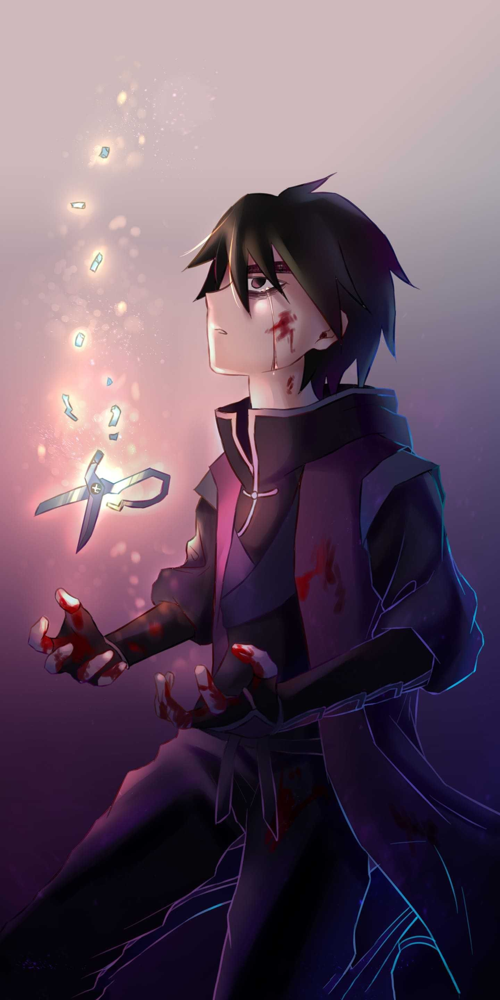

Bienvenido a mi Primera Página Web
Hola mi nombre es Brandon Luis y hoy vengo a compartir algunos datos sobre mi para mi poroyecto de computación, espero que sea de su agrado.
Me llamo brandon y tengo una relación muy buena con mis padres, me gustan los deportes, las matemáticas, pintar, dibujar, colorear, pasear, películas, series, etc. En mis ratos libres veo tele o duermo, como deporte en especial me gusta el fútbo y como ídolo tengo a "messi" como serie me encanta "nanatsu no taizai" y "scissor seven" que para mi son maravillosas.

CONCLUSIÓN:
llHasta aquí llega mi página web y espero que les haya gustado, les deseo feliz navidad y próspero año nuevo en compañía de toda su familia. GRACIAS.